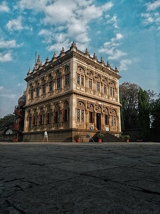
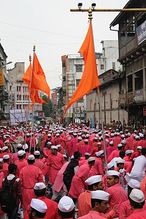

| Welcome To Pune City | |||||
|---|---|---|---|---|---|
| HOME | HISTORY | GEOGRAPHY | CULTURE | IT HUB | TOURIST PLACES |
|
Architecture
Historical attractions include the 8th century rock-cut Pataleshwar cave temple, the 18th century Shaniwarwada, the 19th century Aga Khan Palace, Lal Mahal and Sinhagad fort. Shinde Chhatri, located at Wanowrie, is a memorial dedicated to the Maratha general Mahadaji Shinde (Scindia).[176] The old city had many residential buildings with courtyards called Wada. However, many of these have been demolished and replaced by modern buildings.
A renowned wada in Pune is the last residential palace of the Peshwa called Vishrambaug Wada which is currently being renovated by the city corporation.[177] The city is also known for its British Raj bungalow architecture and the Garden Cities Movement layout of the Cantonment from the early 20th century. Landmark architectural works by Christopher Charles Benninger surround the city, including the Mahindra United World College of India, the Centre for Development Studies and Activities, the YMCA Retreat at Nilshi and the Samundra Institute of Maritime Studies. Shinde Chhatri-
Shinde Chhatri (Marathi : शिंदे छत्री) at Wanawadi in Pune, India is a memorial dedicated to the 18th century Maratha military leader Mahadji Shinde who served as the commander-in-chief of the Maratha army under the Peshwas from 1760 to 1780. It is one of the most significant landmarks in the city and is reminiscent of the Maratha rule. It is a hall that marks the spot of Mahadji Shinde's cremation on 12 February 1794.[1][2] In 1794, the complex of the memorial only had a temple, dedicated to Lord Shiva, which was built by Mahadji Shinde himself. He died the same year and his last rites were performed in the premises. The memorial to Mahadji was commissioned by one of his descendants. |
 | ||||
|
Festivals
Ganesh Chaturthi is widely and publicly celebrated in Pune. Lokamanya Bal Gangadhar Tilak started the public celebration of the festival as a means to circumvent the colonial British government ban on Hindu gatherings through its anti-public assembly legislation in 1892.[189][190] Pandals with Ganesh idols are erected all across Pune. Many Ganesh mandals display live or figurine shows called Dekhava during the festival. These shows often carry socially relevant messages. Processions of Ganpati are accompanied by Dhol-Tasha pathaks (groups who play Dhol-Tasha percussion instruments). Involvement of these pathaks has become a cultural identity of Pune with there being over 150 such groups operating in and around Pune. Jnana Prabodhini, a social organisation in Pune is widely accredited for founding the tradition of Dhol-Tasha pathaks. Ganesh Chaturthi-
Ganesh Chaturthi , also known as Vinayaka Chaturthi or Vinayaka Chavithi or Vinayagar Chaturthi, is a Hindu festival that tributes Hindu deity Ganesha.The festival is marked with the installation of Ganesha's clay murtis privately in homes and publicly on elaborate pandals. Observances include chanting of Vedic hymns and Hindu texts, such as prayers and vrata.Offerings and prasada from the daily prayers, that are distributed from the pandal to the community, include sweets such as modak as it is believed to be a favourite of Lord Ganesha. The festival ends on the tenth day after start, when the Murti is carried in a public procession with music and group chanting, then immersed in a nearby body of water such as a river or sea, called visarjana on the day of Ananta Chaturdashi. In Mumbai alone, around 150,000 Murtis are immersed annually. Thereafter the clay Murti dissolves and Ganesha is believed to return to his celestial abode. |
 | ||||
|
See Also
|
Pune Map |
||||